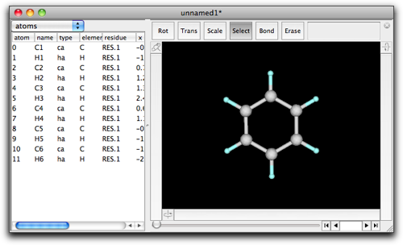
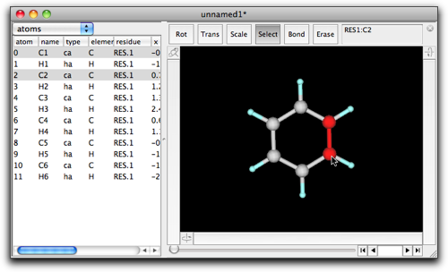
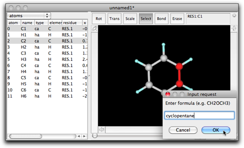
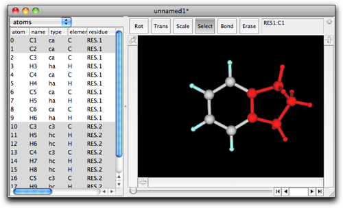
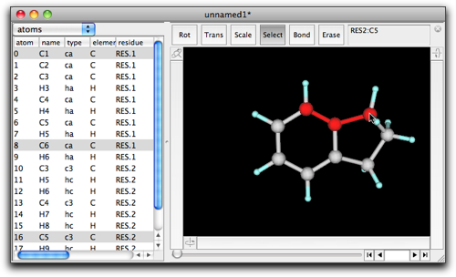
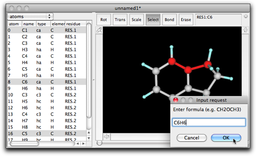
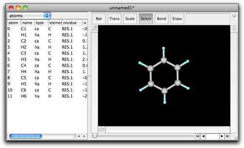
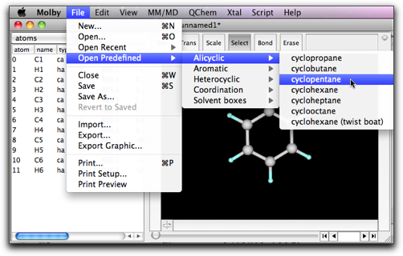
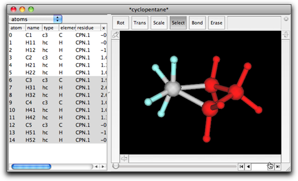
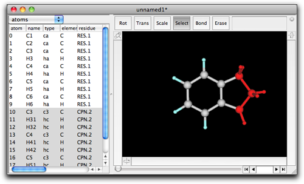

第四段階：縮環構造の作成
1. ダブルクリック／キー入力による縮環
Molby は縮環構造を作るための機能を持っています。例として、インダンを作るもう一つの方法を紹介します。今回は、ベンゼンから始めます。

"Select" モードにして、C1-C2 結合をクリックして C1 と C2 を選択します。

選択部分をダブルクリックして、ダイアログボックスに "cyclopentane" と入力します。

"OK" を押すと、５員環がベンゼン環に縮環します。

選択部分が３個以上の原子を含んでいても、縮環は可能です。例えば、インダンで図のように３つの連続した炭素原子を選択してみます。

選択部分をダブルクリックして、"C6H6"（または "benzene"）と入力します。

そうすると、アセナフテンができます...だいたい。

上の図に示したように、橋頭位の炭素に１つ余分な水素原子が残ってしまいます。実のところ、Molby はあんまり賢くありません。選択部分の両端の原子から水素原子を１つずつ取り除いて、縮環する分子（この場合はベンゼン）の一部をかわりに結合して、生成する環の原子数が一致するようにしているだけです。このため、元の選択部分または縮環する分子が sp3 炭素を含んでいると、立体化学が変になることがあります。水素原子を除いたり付け加えたりして、さらに構造を最適化する必要があるでしょう（詳しくは「エネルギー最小化」を見てください）。
2. コピー／ペーストによる縮環
縮環構造を作るには、コピー／ペーストを使ったもう一つの方法があります。またベンゼンから始めましょう。

"File" メニューを開き、"Open Predefined" → "Alicyclic" → "cyclopentane" を選んでください。

"*cyclopentane*"という名前の新しいウィンドウが開き、シクロペンタン分子が入っています。３つのメチレン基を選択して、コマンド-C またはコントロール-C でコピーしてください。

ベンゼン分子に戻って、今度は H1 と H2（C1 と C2 ではなく）を選択してください。

コマンド-V またはコントロール-V でペーストしてください。インダンができます。

この「コピー／ペースト」は、実は前に説明したのと (カット／コピー／ペースト) 同じように機能しています。現在の選択部分とクリップボードの内容がともに「２つの末端」を持っているとき、末端同士がつなぎあわされ、縮環したように見えるのです。この方法による縮環は「ダブルクリック／入力」の方法よりも少し複雑ですが、何が起きているかはこちらの方が理解しやすいかもしれません。